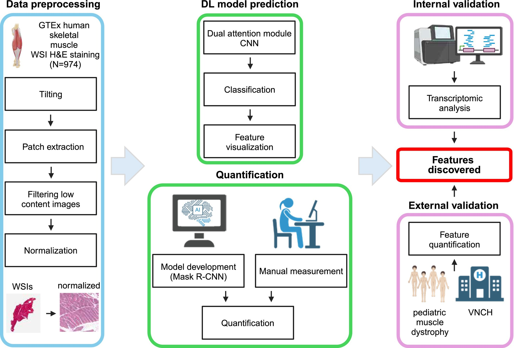
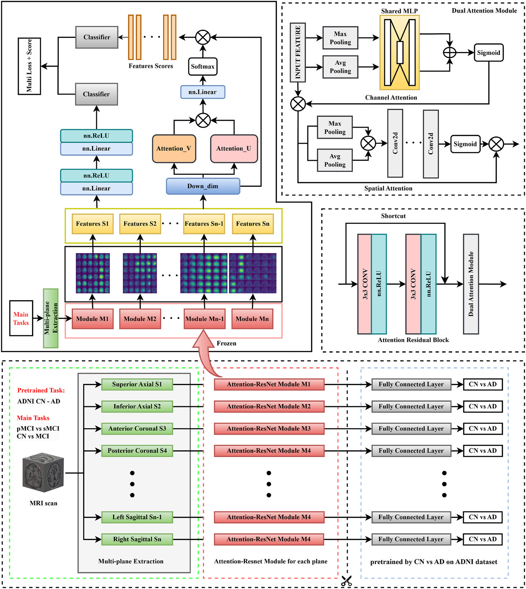
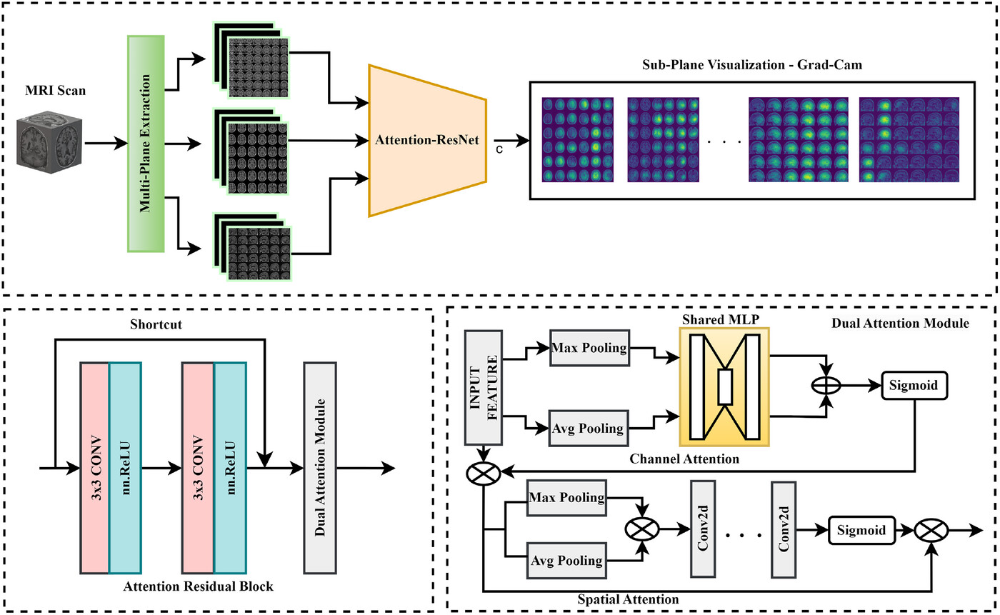
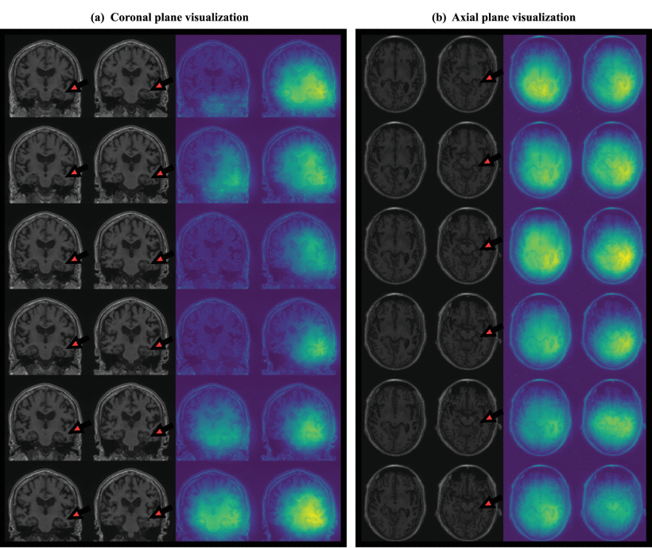
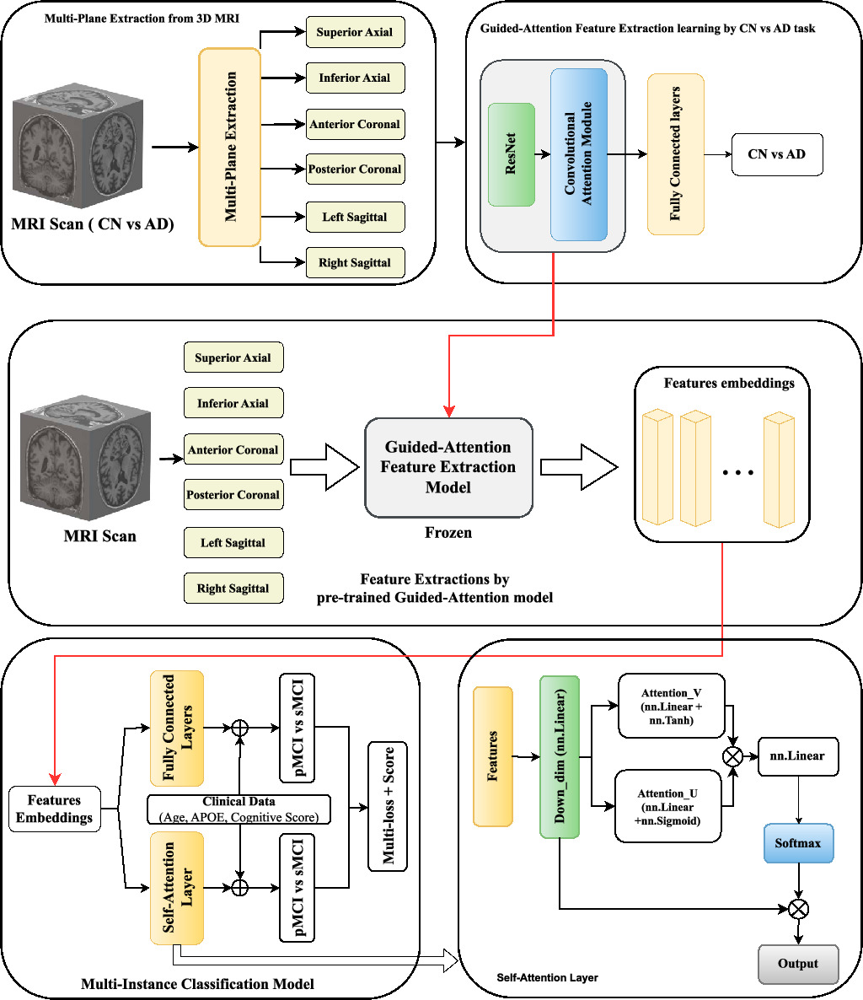
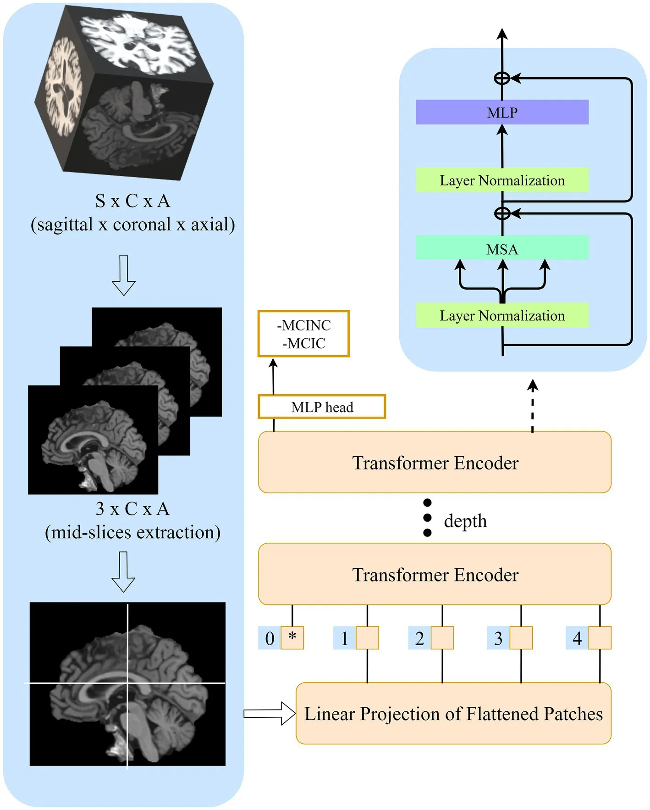
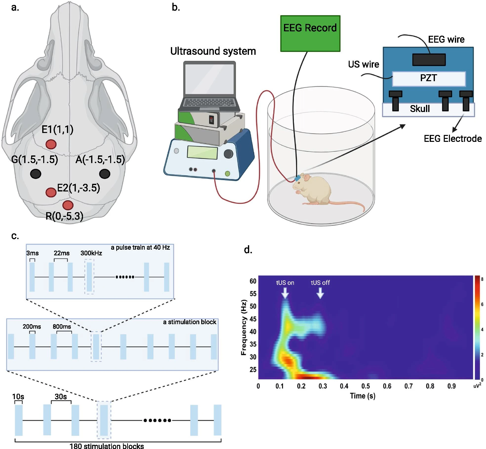

Nuclear enlargement as a histological hallmark of skeletal muscle aging, revealed by deep learning-driven analysis and validated in inflammatory myopathies
Aging Cell, June 2026

Aging Cell, June 2026

Alzheimer's & Dementia, Dec 2025

Alzheimer's & Dementia, Dec 2025

IEEE Access, June 2025

Physica Scripta, Apr 2025

Frontiers in Aging Neuroscience, Apr 2023

Translational Neurodegeneration, 2021